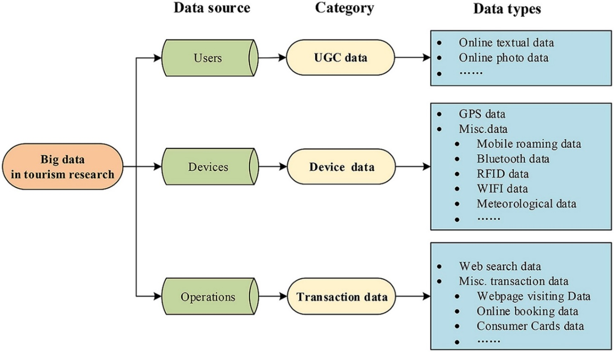

Ni Wayan Sumartini Saraswati
Desember, 2023
MENGHIMPUN BIG DATA TOURISM
SUMBER BIG DATA TOURISM
Secara luas, big data dapat dikategorikan berdasarkan sumbernya (Nabila Nurkhalishah Harris, 2021), yakni:
-
Machine Generated Data (MGD)
MGD merujuk kepada data yang secara otomatis dihasilkan oleh perangkat hardware, misalkan data GPS, data mobile roaming , data RFID, data cuaca.
-
People Generated Data (PGD)
PGD merujuk kepada data yang dihasilkan dari kegiatan user pengguna aplikasi. Data ini dapat dikategorikan sebagai data teks dan data citra dan video. Dengan adanya media sosial dan platform digital lainnya PGD cenderung berkembang dengan sangat pesat. PGD tidak hanya dari data media sosial, namun juga dapat bersumber dari data transaksi, misalkan kata kunci pencarian pada website, booking data, transaksi kartu kredit dll.
-
Organization Generated Data (OGD)
OGD merujuk kepada data yang dihasilkan oleh organisasi. Dalam dunia pariwisata data ini bisa berbentuk data kunjungan wisatawan asing dari imigrasi, data kunjungan wisatawan domestik dari Badan Pusat Statistik (BPS), data konsumsi wisatawan, data tingkat hunian hotel dll.
Berikut adalah gambar kategorisasi sumber big data pariwisata.

Kategorisasi sumber big data pariwisata. Sumber : (Li et al., 2018)
Pertumbuhan data dari berbagai macam platform digital sangat pesat. Sangat disayangkan jika data tersebut hanya tersimpan tanpa ada pengolahan lebih lanjut untuk menjadi informasi. Berikut adalah gambaran pertumbuhan data yang siginifikan dari beberapa platform digital populer.

Pertumbuhan data. Sumber (https://www.domo.com/news/press/data-never-sleeps-7)
Sumber big data bervariasi, dalam banyak kasus berisi jejak digital pengguna dari ponsel, kartu kredit, dan media sosial. Dalam pariwisata, sumber big data meliputi (WTO, 2020):
- Sistem komunikasi, misalnya, data jaringan seluler, media sosial;
- Web di seluruh dunia, mis., situs web individu/bisnis;
- Data transaksi, misalnya, sistem pemesanan penerbangan, transaksi ritel;
- Sensor fisik, misalnya, tempat menarik/informasi; dan
- Crowdsourcing, mis., gambar dan konten dari platform, mis., YouTube, TripAdvisor.
BAGAIMANA MENGHIMPUN BIG DATA TOURISM
Berbagai macam sumber data menyebabkan bervariasi juga cara untuk menghimpunnya. Berikut adalah macam data wisatawan dalam sebuah big data. Data demografi wisatawan dapat diperoleh dari dinas pariwisata atau BPS, namun untuk data yang lebih signifikan kita dapat memperolehnya dari media sosial. Data preferensi konsumen dapat kita peroleh dari riwayat konsumsi wisatawan ataupun review yang diberikan terhadap produk atau layanan. Data flights memberikan informasi signifikan terhadap wisatawan yang berkunjung dan durasi masa berkunjung, terutama untuk wisatawan asing. Data booking activity, meals, transportation dan destination membawa informasi mengenai potensi pariwisata sebuah daerah dilihat dari konsumsi wisatawan.

Macam data wisatawan yang dikumpulkan pada big data,
sumber (The complete guide to big data analysis in travel - Optimizely, n.d.)